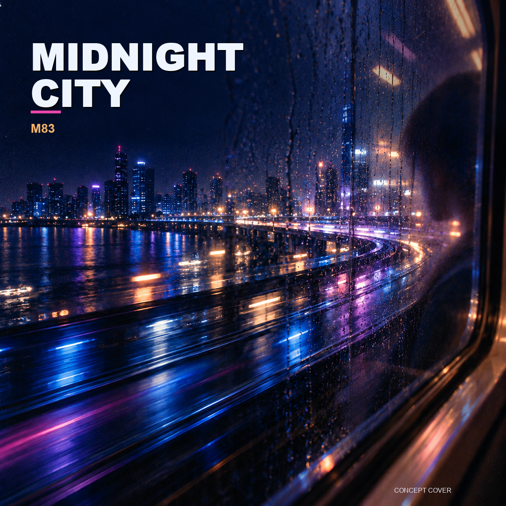
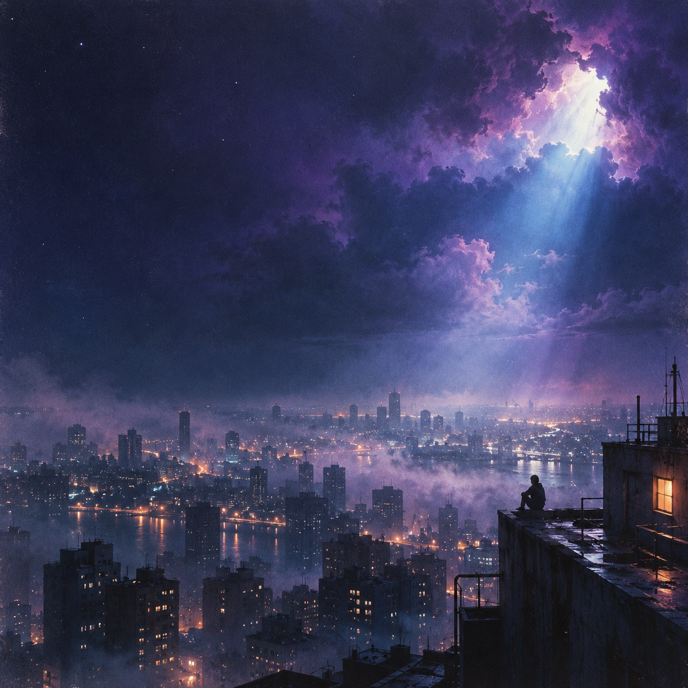
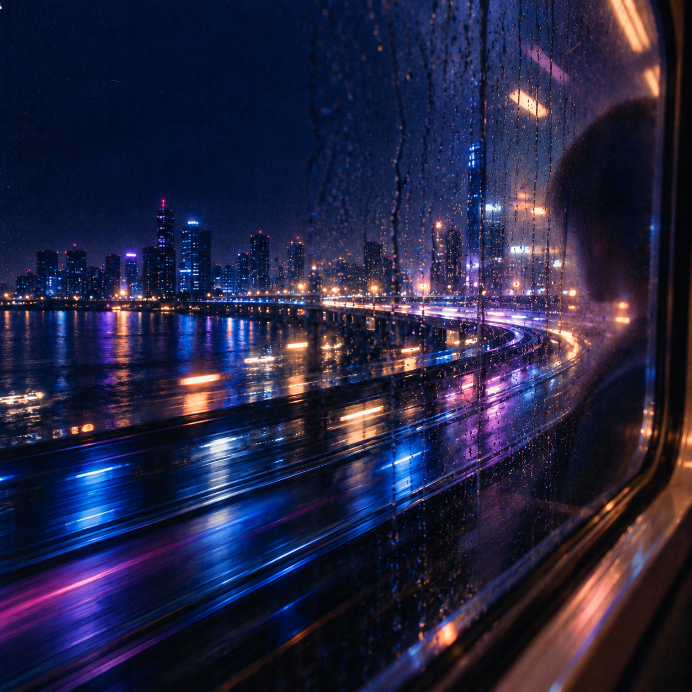

01 · Album cover design
Midnight
City
An original cover concept for M83’s “Midnight City,” translating the track’s energetic, nostalgic, slightly mysterious feeling into a rain-soaked nighttime journey.

From atmosphere to image.
The project began with the song’s emotional contradiction: upbeat motion paired with the solitude of being awake in a city at night. I tested distinct visual directions—city grids, rooftops, transit, and reflective windows—then evaluated each for depth, energy, and legibility.
The final direction places the viewer inside a moving vehicle. Rain, reflections, and bands of blue, magenta, and amber light create speed without losing the quiet interior viewpoint. Bold type anchors the cover and keeps the title readable at thumbnail size.


See the complete process
Prompts, evaluations, revisions, and reflection.
Open process book ↗Prompts, evaluations, revisions, and reflection.